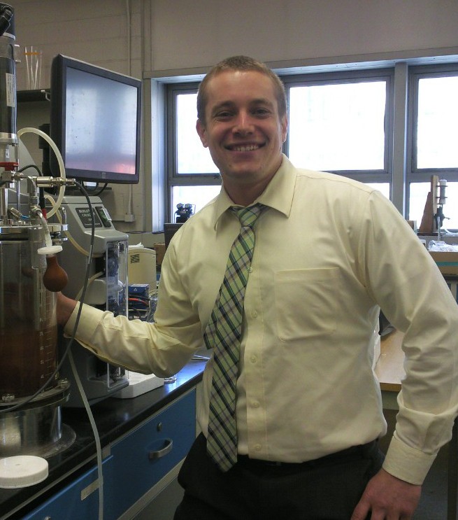

Principal Investigator

Louis Berger Junior Professor of Civil and Environmental Engineering
Postdocs

Ph. D. (2014) City College of New York, Civil and Environmental Engineering
Alex joined the Wells research group in 2014 and is involved in multiple applied and fundamental research projects. His current project is an investigation of the interplay among mesoscale structure, mechanical properties, and emergent macroscale function in environmentally relevant biofilms. The long term goal of this project is to create a strategy for “structural health monitoring” of biofilm reactors that could be adopted by researchers and water resource recovery engineers to predict process stability. On the applied side, Alex is participating in studies to investigate the feasibility of (1) applying anaerobic ammonium oxidation in the mainstream of municipal water resource recovery facilities and (2) various fermentation technologies to recover waste organic carbon for beneficial use. Together, these projects help guide municipalities towards energy- and cost-neutral water resource recovery.
Graduate Students

B.A. (2014) Northwestern University, Chemical Engineering
A riffle structure (which structurally and functionally resembles a beaver dam) was constructed at Neal Marsh in the Upper Des Plaines River so that the surrounding area could be restored to its wetland status. However, a growing concern is that various micropollutants--called pharmaceuticals and personal care products (PPCPs) and endocrine disrupting chemicals (EDCs)--could be causing harm to the microbial community that resides in biofilms within that riffle structure. The focus of my research is therefore threefold: 1) Determine what specific chemicals are in that region of the Des Plaines River; 2) determine if and how those chemicals are affecting the microbial community structure; and 3) determine if and how those chemicals are affecting the microbial community function. For this research, I am collaborating with Xu Zhang (a fellow MBP student), Dr. George Wells, and Dr. Kim Gray.
B.A. (2011) University of California Berkeley, Landscape Architecture & Environmental Planning
Some of my recent research efforts have focused on characterization of dual and mixed-species biofilm structural parameters using data analysis of 3D image stacks obtained through confocal laser scanning microscopy (CLSM) and optical coherence tomography (OCT). My future research will focus on the distribution and spread of antibiotic resistance genes in aquatic ecosystems associated with effluent from wastewater treatment plants, particularly in the Great Lakes.

B.S. (2012) Massachusetts Institute of Technology, Chemical Engineering
My research uses high throughput sequencing to investigate the complex microbial consortia in engineered and natural environments. I’m currently studying seasonal shifts in communities in Chicago’s Water Reclamation District using amplicon sequencing. I am developing new methods to improve our Understanding the environmental factors that lead to community stability and resilience and identifying triggers for and responses to disturbances is critical to designing efficient processes for nutrient removal.

M.S. (2013) Johns Hopkins University, Civil and Environmental Engineering
Han Gao is a Ph.D. candidate in the Department of Civil and Environmental Engineering at Northwestern University. She holds a M.S. in Geography and Environmental Engineering from Johns Hopkins University, and B.S. in Environmental Science and Engineering from Tongji University. During her undergraduate study, Han was involved in research related to anaerobic digestion and algal cultivation. Her research interest is the field of resources and energy recovery from wastewater.
Collaborators
Oluwaseyi BalogunAssistant Professor of Mechanical Engineering
McCormick School of Engineering and Applied Science
Northwestern University
Kimberly Gray
Professor of Civil and Environmental Engineering
McCormick School of Engineering and Applied Science
Northwestern University
Brian Murphy
Assistant Professor of Medicinal Chemistry & Pharmacognosy
College of Medicine
University of Illinois at Chicago
Justin Notestein
Professor of Chemical and Biological Engineering
McCormick School of Engineering and Applied Science
Northwestern University
Aaron Packman
Professor of Civil and Environmental Engineering
McCormick School of Engineering and Applied Science
Northwestern University
Rachel Poretsky
Assistant Professor of Biological Sciences
College of Liberal Arts and Sciences
University of Illinois at Chicago